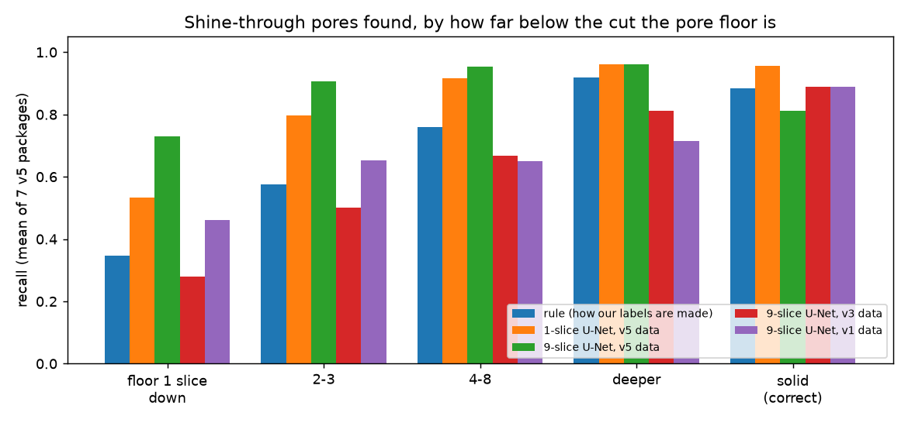
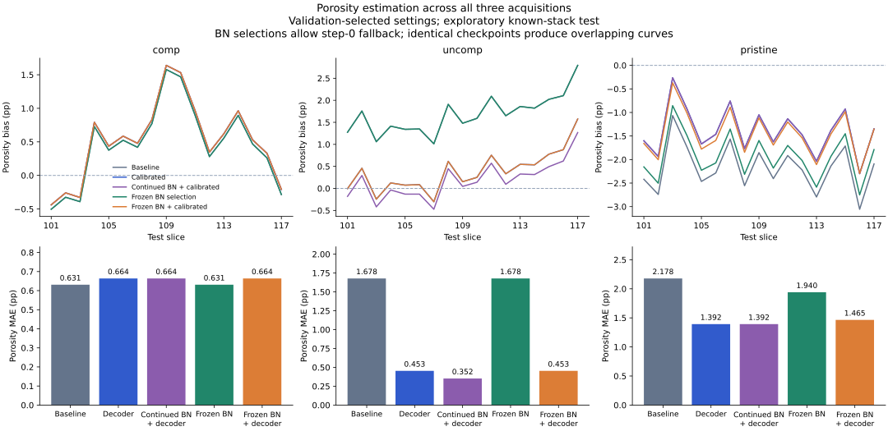
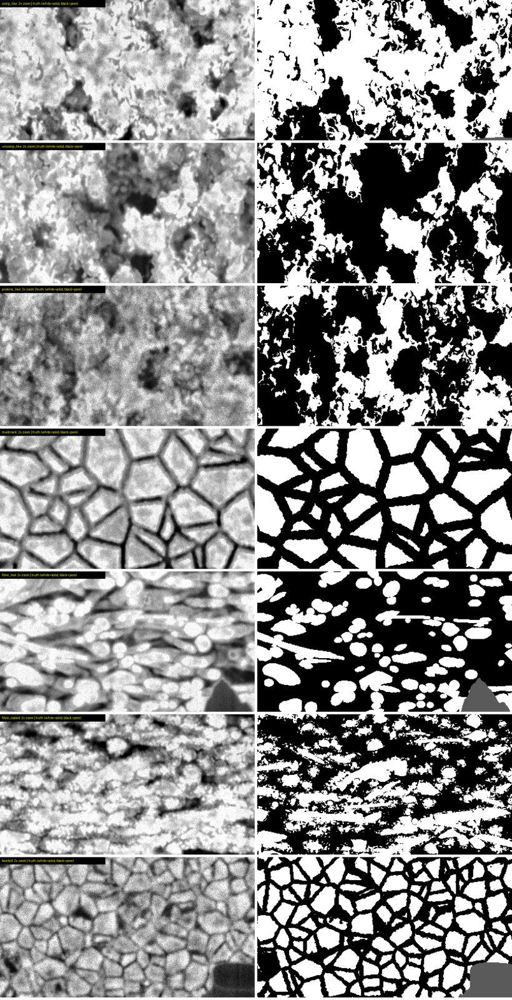
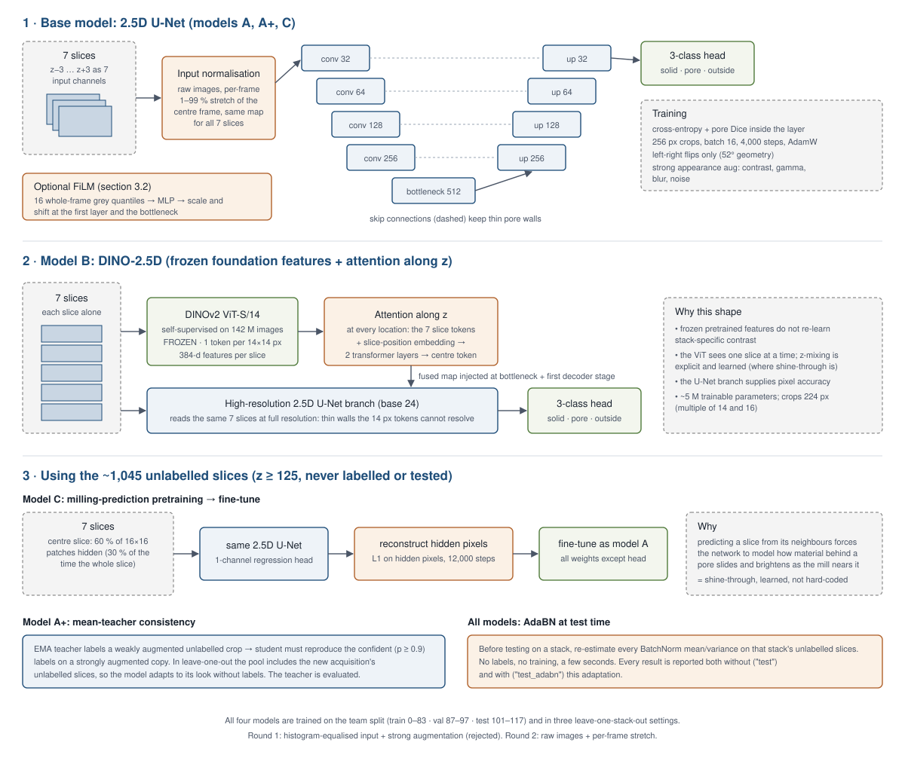
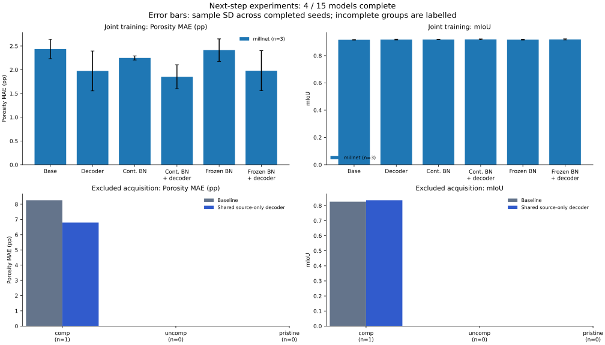

Four lines of work on the same four-annotator dataset and the same split (train 0–83, validation 87–97, test 101–117). Each asks a different question. This page sets them side by side, shows where they agree, and turns them into one story.
| Who | Question | Approach | Headline | Metric |
|---|---|---|---|---|
| Aaditya | Which architecture segments our stacks best? | MillNet-SA2 against nnU-Net and pretrained U-Nets; ablations; learned-appearance digital twin | 0.935 vs 0.919 mIoU (nnU-Net), 3 seeds, significant on uncomp and pristine | 3-class mIoU |
| Dhruv | Does a model survive an acquisition it never saw? | Leave-one-stack-out; input choices, AdaBN, mean-teacher, DINO-2.5D, masked-slice pretraining | Mean-teacher on unlabelled slices: unseen mean 0.817 → 0.839 (3 seeds) | Pore IoU in the true layer, layer IoU, porosity error |
| Yunzhi | Can porosity bias drop without losing accuracy? | Validation-calibrated decoder on MillNet; matched continued vs frozen BatchNorm | Porosity MAE 1.50 → 0.84 pp (separate models); 2.44 → 1.98 pp (joint, 3 seeds) | mIoU, porosity MAE and bias |
| Hou Kin | What do we learn when the answer is known exactly? | Physics-built synthetic stacks (v1–v5) in the team's package format, with truth masks | A threshold rule tuned to our start masks is off by −6.3 to +4.1 pp from truth; 9-slice context finds shallow shine-through | Porosity error, pore IoU, recall by depth, all vs truth |
The metrics differ, so absolute numbers are comparable only where the metric matches. Aaditya's report also contains pore IoU in the true layer, the same definition as Dhruv's; it is used below where the two are compared.
Conditioning on a frame histogram is a strong prior when the histogram looks familiar and an extrapolation when it does not. Dhruv's layer-IoU result is the mechanism behind MillNet's 0.656 on unseen pristine.
Slice context matters for a small set of pixels: pore rims with material just below the cut face. Three-class mIoU is dominated by large solid and outside regions and hides it; pore IoU and Hou's depth-resolved recall show it. The paper should say multi-slice input helps pore detection, measured by pore IoU.

Re-normalisation fixes a feature-statistics shift, and only pristine has a large one. Nobody found a label-free rule for when to apply it, so it should not be a default.
| Approach | Who | Unseen pristine | Uses from pristine |
|---|---|---|---|
| MillNet-SA2, no adaptation | Aaditya | 0.656 mIoU | nothing |
| U-Net ResNet-34, no adaptation | Aaditya | 0.837 mIoU | nothing |
| Raw + stretch U-Net | Dhruv | 0.781 ± 0.018 pore IoU | nothing |
| Mean-teacher on unlabelled slices | Dhruv | 0.845 ± 0.024 pore IoU | unlabelled slices |
| Raw + stretch U-Net + AdaBN | Dhruv | 0.870 pore IoU, porosity +0.011 | unlabelled slices |
| Fine-tune on 2 labelled slices | Aaditya | 0.913 mIoU | 2 labelled slices |
| Fine-tune on 5 labelled slices | Aaditya | 0.937 mIoU | 5 labelled slices |
Without any pristine labels, Dhruv's mean-teacher is the most reliable route (3 seeds), though pristine stays seed-sensitive (porosity swings from +13 to −7 points between seeds). With labels, 2–5 slices close the gap. Everyone also sees the same pristine porosity bias on known stacks: −0.02 to −0.04 (Dhruv), −1.4 to −2.2 pp (Yunzhi), about −3 pp for single-slice models (Hou Kin).

Yunzhi's calibration is the cheapest porosity fix and applies directly to MillNet-SA2. Hou Kin's result sets its limit: agreeing with the labels to 1 pp does not mean agreeing with true porosity to 1 pp. Porosity claims in the paper should quote both numbers.
| Aaditya: learned appearance | Hou Kin: physics renderer | |
|---|---|---|
| Structure | SliceGAN per acquisition, trained on the hand masks | Voronoi foam and catalyst / fibre / mudcrack / faceted materials (v5) |
| Appearance | Conditional GAN learned from paired masks and real images | Interaction-volume yield, edge brightening, escape, depth brightness, tone matched |
| Realism check | A real-trained model scores 0.913 / 0.927 / 0.895 on twin vs 0.915 / 0.949 / 0.949 on real (same structure) | Blind test: pristine at chance; comp and uncomp spotted 12–14 of 16. A patch classifier still separates all three |
| Scale | 60 volumes of 40 × 256 × 256 | Full-length stacks at the real sizes (354 / 410 / 665 slices) |
| Best model on its own synthetic data | MillNet-SA2, 0.930 pore IoU | 9-slice U-Net v3: 2.9 pp, pore IoU 0.84; 1-slice v5: 3.0 pp, Dice 0.87 |
Hou Kin's cross-renderer test shows models do best on the renderer they were trained on: 2.9 pp on their own renderer against 15.6 pp for a model from an older renderer. So MillNet's 0.930 is a matched-renderer result. Scoring each side's models on the other side's data is the cleanest check of any synthetic claim, and the packages are already drop-in compatible.

Two people, separate code paths, the same number. The MillNet baseline is reproducible.

